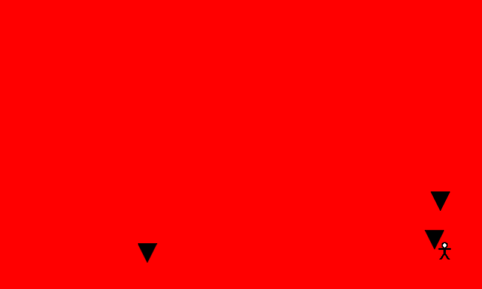

Rectangle Collision
Ported from Microsoft's XNA 4.0 2D Collision Tutorial 1: Rectangle.
Source for this sample on GitHub ↗

Play ▸Opens in a new tab. Click the canvas so it receives keyboard input.
About this sample
Move the person beneath falling blocks. The background turns red whenever the two sprites'
rectangular bounds overlap. Their visible shapes can miss each other and still count as a hit.
This first tutorial uses Rectangle.Intersects; the per-pixel tutorial tests the
opaque texture pixels instead.
Controls
| Action | Keyboard | Gamepad |
|---|---|---|
| Move person | Left / Right arrow | D-pad left / right |
| Exit | Esc or close the tab | Back |